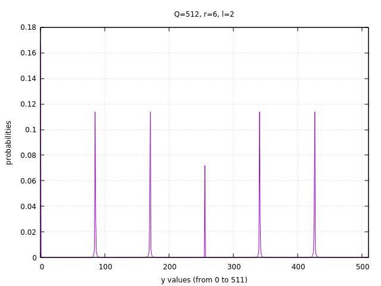

量子计算会终结现在的密码体系吗？(6) 实战篇
Ping Zhou, 2021-06-07
量子计算机解决因式分解问题的Shor算法，前面讨论了许多背后的数学原理，未免有点抽象，今天用一个简单的例子来实际演示一下，相信可以对Shor算法有更直观的认识。
因式分解问题：N=21
人肉计算，数字不能用的太大 :-) 这里就假设我们要分解N=21这个数，以它为例子。
根据Shor算法，首先我们要在1到N之间选个随机数a，然后看a和N是否互质：
如果a和N不互质， \(GCD(a, N) \ne 1\) ，那么我们很走运， \(GCD(a, N)\) 就是N的因子之一，问题解决。
如果a和N互质，比如说a=11，继续下一步，用量子计算机寻找函数 \(f(x)=a^x \mod N\) 的周期r，也就是使得 \(1=a^r \mod N\) 的最小正整数r。
在这个例子里，假设我们挑选的随机数a=11，所以我们要找的是这个函数的周期：
\begin{matrix} f(x)=11^x \mod 21 \end{matrix}我们简单算一下就可以知道，这个函数的周期是6:
| \(x\) | \(f(x)=11^x \mod 21\) |
|---|---|
| 0 | 1 |
| 1 | 11 |
| 2 | 16 |
| 3 | 8 |
| 4 | 4 |
| 5 | 2 |
| 6 | 1 |
| … | … |
但是在这个例子中，函数周期是未知的，需要用量子计算机来求解。
找函数周期
前文已经讨论过，量子计算寻找函数周期的电路长这样：
这里面的2个寄存器，分别需要多少个量子位呢？
一般的规则是，寄存器能表达的最大二进制数q，应该不小于N的平方： \(N^2 \le q \le 2N^2\) （这个规则是从概率推导出来的，具体可参见相关教科书）。因此，量子位的数目n，应该不小于 \(\log N^2\) 。在这个例子里面，N=21 ，所以每个寄存器需要9个量子位， \(q=2^9=512\) 。
经过 \(U_f\) 后，我们其实就不关心第2个寄存器 \(|\beta\rangle\) 的状态了，换句话说我们『丢弃』了第2个寄存器。但在量子计算中，『丢弃』实际上也意味着一种『隐性的测量』（implicit measurement），所以，可以认为 \(|\beta\rangle\) 隐性的坍缩到了某个值z。
而这时候的第1个寄存器 \(|\alpha\rangle\) ，必然处于使得 \(11^x \mod 21 = z\) 的所有 \(|x\rangle\) 的叠加态。
还是举例来说，假设第2个寄存器隐性坍缩到了z=16， \(11^x \mod 21 = 16\) 对应的解（x值）是 2, 8, 14, 20, … ，所以第1个寄存器 \(|\alpha\rangle\) 这时候的状态，就是在0到511之间所有这些解的叠加态：
\(|2\rangle, |8\rangle, |14\rangle, |20\rangle, \dots, |506\rangle\)
这里面一共有85个态。我们不关心第2个寄存器坍缩到的z值，因为我们要找的是函数的周期r，无论z是多少，函数的周期总是r，第2个寄存器坍缩到哪个z值，只影响offset（也就是 \(l+jr\) 里的 \(l\) ）。例如这个例子里，z值是16， \(11^2 \mod 21=16\) ，所以这个 \(l+jr\) 序列里的 \(l\) 是2 。
这个叠加态，再经过量子傅里叶变换，得到一个 \(|0\rangle, |1\rangle, \dots, |511\rangle\) 的叠加态：
\begin{matrix} \sum_{y=0}^{q-1} \tilde f(y) |y\rangle,\\ \tilde f(y) = \frac{1}{\sqrt{qm}} e^{2\pi ijry/q} \sum_{j=0}^{m-1} e^{2\pi imry/q} \\ (q=512, m=85, r=6) \end{matrix}如果我们这时对第1个寄存器进行测量，得到的y值在0到511之间分布，每个y值的概率就是它的 \(\tilde f(y)\) 的模。
前文我们讨论过， \(\tilde f(y)\) 的模是这么算的：
\begin{matrix} \vert \tilde f(y) \vert^2 = \frac{1}{qm} \frac{\sin^2 \pi mry/q}{\sin^2 \pi ry/q} & (q=512, m=85, r=6) \\ = \frac{1}{512 \times 85} \frac{\sin^2 (85 \times 6 y/512)\pi}{\sin^2 (6y/q)\pi} \end{matrix}这里面 y=0 是一个特殊情况，因为这时候分母是0，需要用 \(\tilde f(y)\) 的原始公式来算它的模：
\begin{matrix} \vert \tilde f(0) \vert^2 = \frac{1}{qm} \cdot 1 \cdot \vert \sum_{j=0}^{m-1} e^{2\pi imr \cdot 0/q} \vert^2 \\ = \frac{1}{qm} \cdot 1 \cdot m^2 \\ = \frac{m}{q} = \frac{85}{512} \end{matrix}把这个分布画出来，一看就明白了：

可以看到，y值的分布集中在6个很窄的波峰里，这些波峰把0到511分割成6个等宽的区间。每个波峰对应的就是 \(k/r\) 的一个比值（ \(0\le k \lt r-1\) ）。而在波峰之间的其他区域，y的分布几乎就是0。
所以我们对第1个寄存器进行测量的话，得到的y值，几乎肯定会在某个波峰上。那么这个测到的y值，与q的比例，必然就是非常接近相应的k与r的比值。前文我们说过，测量得到的y与q的比值，非常接近某个整数k与r的比值。这不就对上了？
比如我们测到某个y在第5个波峰上，比如y=427，那么它与q的比值是427/512，用连分数算法，估算出接近的 \(k/r\) 比值：
\begin{matrix} \frac{427}{512} = 0 + \frac{1}{1+\frac{1}{5+\frac{1}{42+\frac{1}{2}}}} \end{matrix}算到第3层， \(\frac{d2}{r2}=\frac{5}{6}\) ，所以 5/6 是 427/512 的一个近似，拿 r=6 去验证一下， \(11^6 \mod 21=1\) ，验证成功！ 于是我们知道了 r=6 。
如果这一步得到的 r 验证没通过，那我们就重新运行这个电路，再次测量。
找N=21的因子
知道了r=6，接下来就很简单了，因为r是偶数，且 \(11^{r/2} \mod 21 \ne -1\) ，因此计算：
- \(a^{r/2} \mod N-1 = 11^3 \mod 21 -1 = 7\)
- \(a^{r/2} \mod N+1 = 11^3 \mod 21 +1 = 9\)
这两个数至少有一个是N的因子。简单看一眼就知道，7是21的因子，于是我们得到了21的因式分解： \(21=7 \times 3\) 。问题解决！
现在你明白量子计算机是如何解决因式分解问题了吧！